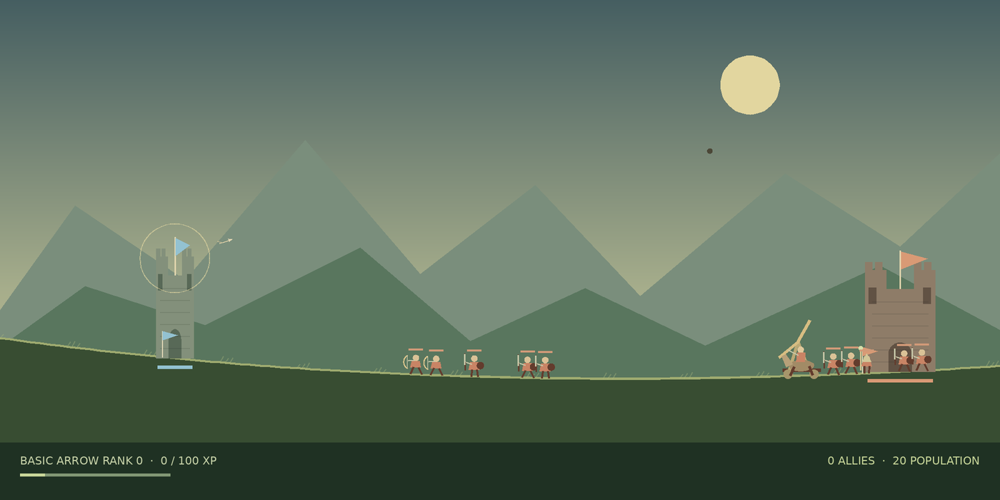

About Castledecks
An archery and army campaign inspired by BowMaster Prelude, now growing into its own game. Recruit allies, summon a companion, and build your arsenal of ability cards. Castledecks is the current working title.
What’s in the current build
Prepare your company at a live war table showing its equipped cards, army contracts and the next field. Choose Crownroad, Wayfarer, seeded practice or Training while retaining each session. The Crownroad atlas presents 30 fields across four illustrated regions, with terrain, enemy intelligence and unlocked replays. On short landscape, the route takes the main workspace and Inspect opens the full mission orders. A separate four-battle Wayfarer charter offers branching routes and its own supplied company. Seeded Skirmish lets you generate a repeatable practice field, choose its landscape and enemy company, and keep its seed code.
Build your company from 12 troop types and a separate companion. Use one full-viewport Deck workspace to discover, browse, compare, acquire and arrange cards. Pick up a real illustrated card to move or swap it into a named action-bar key, or use tap and keyboard placement. Save up to twelve named decks per profile, compare every change and apply owned arrangements together; deck codes preserve them separately from portable campaign files. Empty decks always offer free Basic Arrow recovery. Purchases now accept the exact displayed price, including a zero-gold balance afterward. Army command shows contracts, field slots, reserve recruits and waiting units, with paid recruitment, Auto orders and a fixed Rally line that can be released with Advance. Allied field caps rise to 14, 16 and 18 at the existing campaign milestones. Short-landscape contracts use readable compact rows and separate Auto controls. Every destination opens in preparation before you deliberately start combat.
Crownroad keeps three device-local checkpoint slots and portable campaign files. Reloading restores opening resources or a settled result; soldiers and projectiles do not resume mid-battle. Assisted practice and Wayfarer progress stay separate. The four aiming modes, live high/low arc control and compact phone HUD remain available. Optional guided drills teach real shots, arcs, troop recruitment, elemental counters and companion commands. Controls settings can remap existing keyboard actions, with live help labels and fixed 1–9/0 skill keys.
Verified milestones
- Public playable campaign, charter and assisted playground
- Preserved original recovered; combat statistics compared
- Arrow launch and integration rules recovered
- Spatial campaign atlas and illustrated card/army workspaces
- Full-game replay comparison still pending
Current JavaScript coverage
These systems are implemented in the reconstruction. Original-runtime equivalence is still unverified.
Classic/anywhere pull-back, point and auto aim; 33Hz simulation with browser quick-tap retention
33Hz simulation; ordinary gravity 0.3; bounded local gravity assistance for unreachable Auto shots
All troop families, later enemies, Gorath, flags and neutral towers
25 skills, 12 recruit types, a separate companion, rank/XP and nine-profile save management
Recovery archive
33 fps · 2000 × 1000 authored stage. Two independently retrieved preserved copies match byte-for-byte. A fresh static audit compared damage formulas, elemental resistances, flying hitboxes and Auto aim semantics. The relationship to the formerly recorded official build remains unverified; full original-runtime replay is still pending.

Scope for this build
Use the preserved game as a mechanics reference while developing the requested recruit roster, companions, and card-style catalog. Original-runtime parity remains unverified; new gameplay rules are documented separately. PvP and custom castles come later.
Original art and sound
The source is used privately to understand behavior. The reconstruction uses independently written code and new or properly licensed art and audio. Original artwork, audio and recovered code are not included.